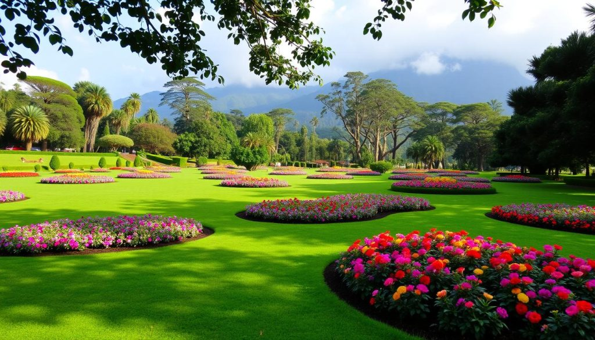

Hakgala Botanical Garden
Situated 5,400 feet above sea level, this garden features a cool temperate climate and over 10,000 species of flora. Famous for its Orchids and Roses, it's a must-visit during the Nuwara Eliya spring season.
VISIT GARDEN